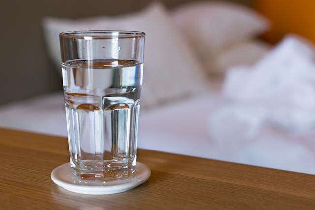

Glass of Water

An easy to make dish called an "Glass of Water"
A glass of water is the favorite dish at r/hydrohomies.
It is the only dish on our list that is recommended to be consumed around
2 liters a day.
Ingredients:
- Water
- A glass
- WATER AGAIN THERE IS NEVER TOO MUCH WATER
Steps
- Carefully reach for the glass
- Pour the water into the glass
- Enjoy your freshly made glass of water